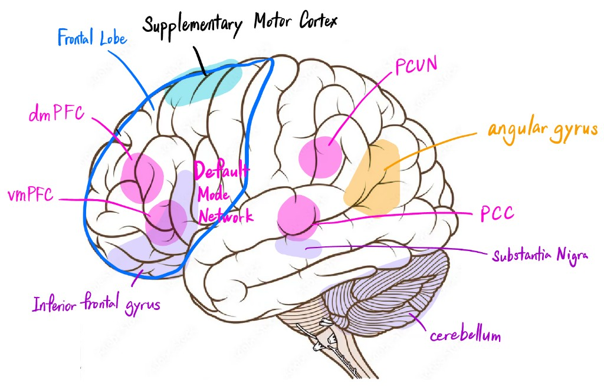

The Music of Memory
Exploring how music therapy could help Alzheimer's patients remember
Begin readingA chain of evidence
This page follows one idea, built from neuroscience and clinical research: music can heighten emotion; emotional arousal knits brain networks together; and stronger connectivity supports what we remember. Personalized, nostalgia-evoking music may be especially powerful for people living with Alzheimer's disease.
Music triggers emotion, including individualized nostalgia.
Emotional arousal strengthens large-scale brain integration.
Music therapy increases connectivity in circuits linked to memory.
Together, these effects point to memory support — not a cure, but a meaningful complement to care.
Section 1
What is Alzheimer's disease?
Memory, cells, and limits of pills
Alzheimer's disease is a progressive neurodegenerative condition. Over years, it impairs memory, attention, language, and judgment in ways that affect daily life. It is the most common cause of dementia — not a normal part of aging, but a disease process that unfolds in the brain.
At the level of tissue, neurons are lost and their connections weaken. The hippocampus and entorhinal cortex — hubs for forming new memories — are hit early. Later changes involve association cortex and prefrontal networks that support planning and self-regulation. As communication between regions falters, the rich synchrony that supports thought becomes harder to sustain.
Several medications can modestly slow symptoms or help with mood and sleep, yet none halt the underlying degeneration for most patients. That gap helps explain growing interest in non-drug approaches — including music therapy — that engage emotion, reward, and motor systems that may remain relatively accessible even as memory circuits struggle.

- 1 · Angular gyrus — highlighted after music intervention in mild Alzheimer's (Lyu et al.).
- 2 · Supplementary motor area — engaged by familiar and preferred music in dementia (King et al.).
- 3 · Default mode, medial temporal, insula, posteromedial cortex — part of the nostalgia-related constellation (Hennessy et al.; Barrett & Janata).
- 4 · Frontal-temporal regions — connectivity strengthened with music therapy (Lyu et al.).
- 5 · Substantia nigra, inferior frontal gyrus, cerebellum — tonal and nostalgia-related processing (Barrett & Janata).
Section 2
Music & emotions
Sound, self, and the aging brain
Familiar songs can reopen autobiographical corridors in a moment. Neuroimaging shows that nostalgia-evoking music recruits reward, motor, and integrative networks — often in patterns that differ from generic familiarity.
Because people vary in how prone they are to nostalgia, personalized playlists matter: the same chord progression might leave one listener flat while another feels transported. That individuality is a feature for therapeutic design.
How nostalgia-evoking music lights up the brain — Barrett & Janata (2016)
Barrett and Janata used fMRI to identify brain regions where nostalgia evoked by music correlated with BOLD signal activity. They found that nostalgia-inducing music engaged the reward and emotion regulation networks (inferior frontal gyrus, substantia nigra, cerebellum, insula), especially in people prone to nostalgia. Their findings show music is a powerful and individualized emotional trigger.
Nostalgia across the lifespan — Hennessy et al. (2025)
Using a machine learning method to categorize personalized nostalgic versus familiar non-nostalgic versus unfamiliar music, Hennessy et al. scanned 57 participants aged 18-60+. Nostalgic music activated the default mode network, salience network, reward network, medial temporal lobe, and supplementary motor regions. It also increased functional connectivity between self-referential and affect-related areas. Crucially, older adults showed stronger BOLD signals than younger adults in nostalgia-related regions.
Section 3
Emotions & memory
Arousal knits networks together
Emotional arousal strengthens memory encoding through large-scale brain network integration. When many regions fire in concert, traces of an experience become easier to reassemble later — the physiological basis of a “flashbulb” moment, without the camera.
If music reliably increases arousal and coupling between systems, it offers a plausible bridge toward supporting recall, especially when paired with personally meaningful cues.
Why we remember emotional moments better — Park et al. (2026)
Park and colleagues found that emotional arousal enhances narrative memory by strengthening functional integration across large-scale brain networks. This provides a neural mechanism linking music-induced emotional arousal directly to improved memory encoding and retrieval.
Brain connectivity at rest predicts what we remember — Tambini et al. (2010)
Tambini et al. showed that enhanced brain connectivity during rest (following an experience) correlates with better memory for that experience. This foundational finding connects directly to music therapy research: if music increases brain connectivity, it should also improve memory performance.
Section 4
Music therapy & Alzheimer's disease
Music therapy is non-pharmacological, generally safe, and increasingly supported by neuroimaging — two recent studies help connect sessions on the calendar to changes inside the skull.
From listening to networks
Structured music therapy can target mood, behavior, and cognition simultaneously. When researchers pair clinical outcomes with fMRI, they begin to show not only that patients feel better, but how cortical dialogue shifts in parallel.
The studies below differ in design — one is a six-month randomized trial; the other focuses on preferred listening — yet both converge on connectivity as a central theme.
Six months of music therapy improves cognition in mild Alzheimer's — Lyu et al. (2025)
In a randomized study of 50 patients with mild AD, Lyu et al. assigned participants to either a music-based intervention (20 minutes, three times per week for six months) or standard care. The music group showed significant improvements in cognitive assessments (MoCA), depression (GDS), neuropsychiatric symptoms (NPI), word fluency, and verbal learning. fMRI revealed enhanced frontal-temporal connectivity and increased angular gyrus activity — consistent with improved memory via network strengthening.
Preferred music boosts brain connectivity in Alzheimer's patients — King et al. (2019)
King and colleagues studied 17 patients with Alzheimer's dementia who underwent a personalized music listening program. fMRI showed that preferred music specifically activated the supplementary motor area (typically spared in early AD) and produced widespread increases in functional connectivity across corticocortical and corticocerebellar networks. This transient effect on brain synchronization offers a mechanism for the behavioral improvements seen with music therapy.
Section 5
Why personalized music matters
Bringing the argument home — what listeners, families, and clinicians might take from the evidence so far.
Listening as care
Across these sections, a single chain links the papers: music elevates emotion; emotion recruits large-scale networks; connectivity supports consolidation and retrieval; and structured music interventions in Alzheimer's align with both symptom relief and imaging markers of stronger coupling. None of this replaces medical treatment — but it refracts it, offering a humane complement grounded in mechanism.
Nostalgia-evoking, personalized music deserves special attention: it targets self-referential and reward circuitry that may remain responsive even when explicit recall frays. For caregivers, the practical upshot is simple and profound: the right song might reach someone when a paragraph of prose cannot.
Music accesses parts of the brain that Alzheimer's hasn't yet touched — and that may be the key to unlocking memories.
If you support someone with dementia, consider exploring credentialed music therapy and individualized listening programs alongside medical care. Ask clinicians about evidence-based options, document responses over time, and treat playlists as living documents — updated as life stages and preferences evolve.
References
- Lyu et al. (2025). Music intervention effects on cognitive and behavioral outcomes in mild Alzheimer's disease: a randomized controlled trial with fMRI. Journal of Alzheimer's Disease. Link to the study
- King et al. (2019). Functional connectivity changes in Alzheimer's patients following a music listening program. Journal of Prevention of Alzheimer's Disease. Link to the study
- Barrett, F. S., & Janata, P. (2016). Neural correlates of music-evoked nostalgia. Neuropsychologia. Link to the study
- Hennessy et al. (2025). Personalized nostalgia from music engages default mode and reward systems across adulthood: an fMRI study. Human Brain Mapping. Link to the study
- Tambini, A., Ketz, N., & Davachi, L. (2010). Enhanced brain correlations during rest are related to memory for recent experiences. Neuron. Link to the study
- Park et al. (2026). Emotional arousal enhances narrative memory through functional brain network integration. Nature Human Behaviour. Link to the study